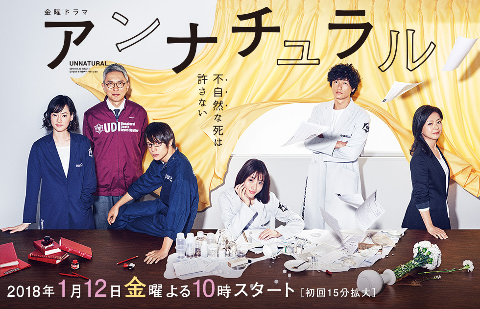
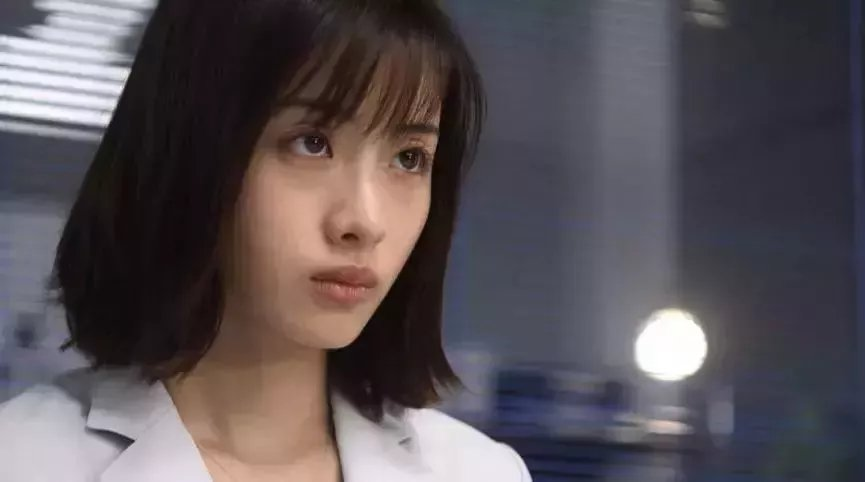

《非自然死亡》（日语名：アンナチュラル）是日本TBS电视台播出的医学悬疑剧，由冢原亚由子、竹村谦太郎、村尾嘉昭执导，野木亚纪子编剧，石原里美主演，洼田正孝、井浦新等共演，于2018年1月12日在日本开播。
在“非自然死亡原因研究所”（简称“UDI”）工作的三澄美琴（石原里美饰）是专门探查死者死因的解剖医生。她最不能容忍的是对“非自然死亡”不闻不问。在她看来，“非自然”的背后必定有着需要法医来追究的真相，比如伪装杀人、医疗失误、未知的疑难疾病等等。然而，在日本，很多非自然死亡的死者都未经解剖就火化了。美琴与她那些个性鲜明的同事们一起，向这样的现实发起了挑战。
